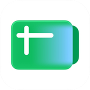

1안 · 두 줄 레일★ 추천
크몽 Prime · 상위 2%현직 DX 자동화 담당
매주 하는 마케팅 업무,
결정만 남기고
넘기세요
모으고 읽고 추려내는 일은 자동화와 AI 에이전트가 해요.
무엇을 할지 고르는 건 끝까지 사람 몫입니다.
상담은 무료예요 · 보통 하루 안에 답장드려요
자동화 n8n
n8n 슬랙
슬랙

시트에이전트 Claude
Claude GA4
GA4 노션
노션
1건사람이 결정
왜 이 안인가
페이지 전체가 '자동화 층 / 에이전트 층' 두 줄로 설계돼 있는데, 그 구조를 히어로에서 미리 보여줍니다. 아래로 내려가면 같은 두 줄이 비교표로 다시 나와서 이어집니다. 모바일에서 2행 구조가 가장 깔끔하게 들어가요.